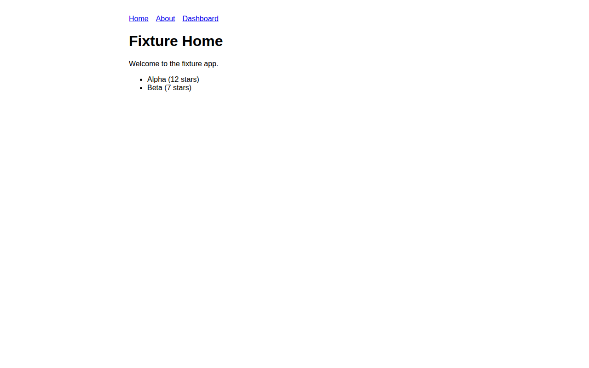
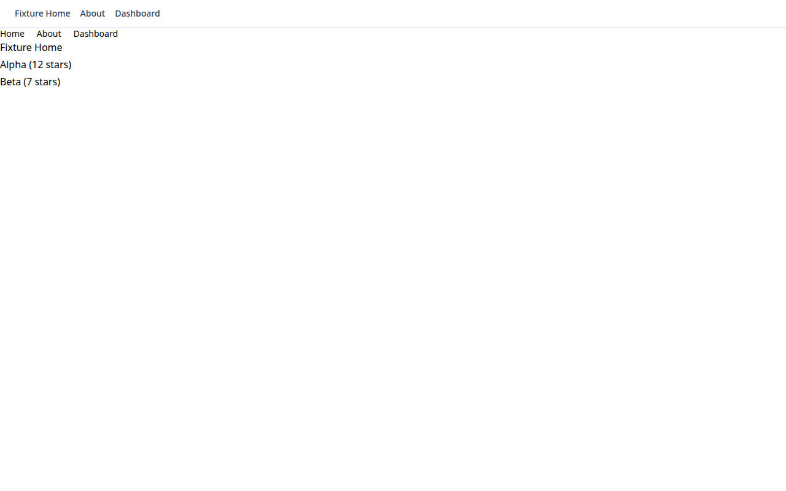
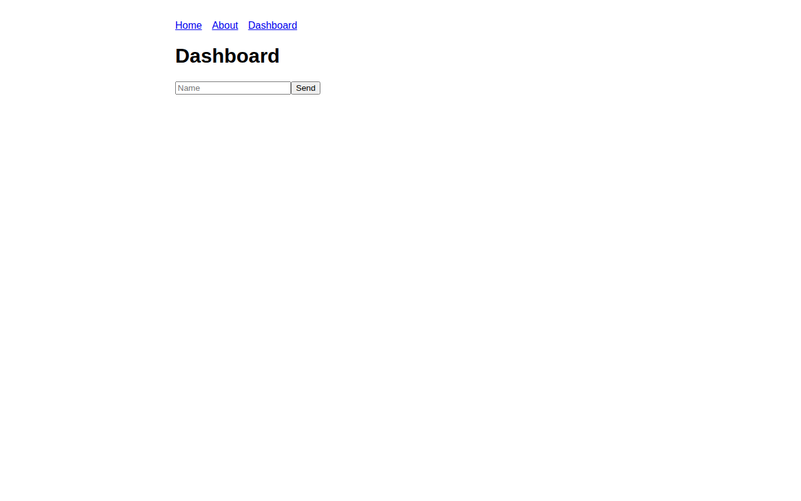
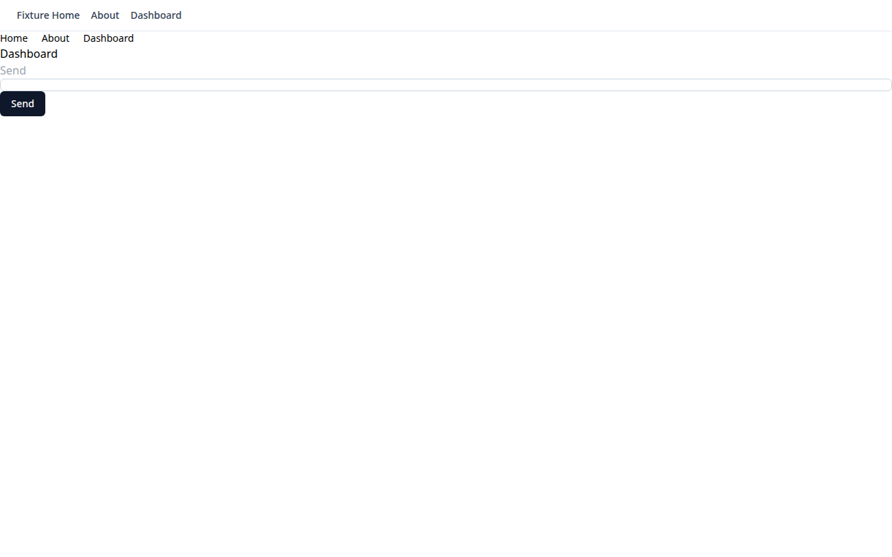

Unvibe points at a vibe-coded app you own, records what it does, and rebuilds it as a real, self-hostable repo — same routes, same data, same flows. No platform lock-in. No copied code.
▶ Watch the demo GitHubFour stages. The spec in the middle is the product's contract: versioned, human-readable, and checked into every output repo.
Headless browser crawls routes, records HAR traffic, downloads assets, screenshots every page.
deterministic · PlaywrightRoute map, API inventory, data-model inference, auth detection → versioned unvibe-spec.json.
Your LLM writes fresh React+TS from the spec only — it never sees platform bundle text.
BYOK · template-boundedScreenshot-diff per route plus contract tests against the inferred API shapes.
pixelmatch · contractsThe full pipeline running against a synthetic fixture app — capture → analyze → regenerate → verify, all passing. Rebuilt with the deterministic mock provider (offline demo mode); a real LLM produces idiomatic components from the same spec.
Real output from the fixture run: the original app (captured) next to the rebuilt app (regenerated, built with Vite, served). Same routes, same content — verify diffs: 0.6% / 0.4% / 0.9%.


vite build + served

Everything the rebuild "knew" is in unvibe-spec.json — behavior,
never platform source. Excerpt from the fixture run:
loading…
Every output repo ships a BACKEND-GAPS.md. Server-side things
(RLS policies, edge functions, triggers, auth user data) are invisible from the client —
so they're listed with manual migration steps, never silently invented. From the fixture run:
The real verify output from the fixture run — screenshot diffs plus contract tests:
loading…
v1 targets *.lovable.app. Unvibe only processes apps you own —
--i-own-this or an interactive attestation is required.
npx unvibe run \ --url https://your-app.lovable.app \ --i-own-this \ --work-dir ./my-rebuild \ --llm-provider openai --model gpt-4o-mini # UNVIBE_API_KEY, or: --llm-provider mock cd my-rebuild/repo cp .env.example .env # your keys, your instances npm install && npm run dev docker compose up -d # self-hosted Postgres